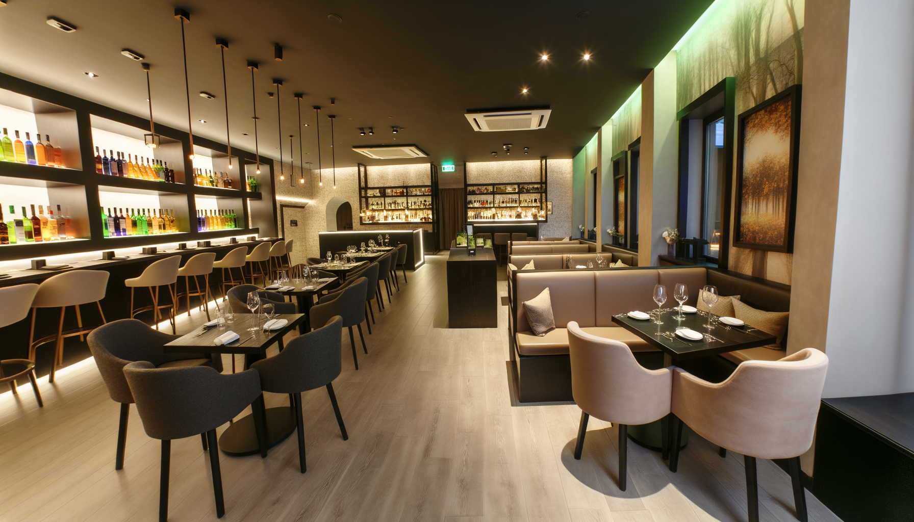

О ресторане
Мы готовы предложить вам уникальный гастрономический опыт с блюдами, которые мы готовим с любовью и вниманием к деталям. Наши повара используют только свежие и качественные ингредиенты.
В "Деливия" вас ждет уютная атмосфера, где каждый гость чувствует себя по-особенному. Мы уверены, что каждый визит станет для вас запоминающимся событием.
Мы предлагаем как классические блюда, так и авторские творения, чтобы удовлетворить любой вкус. Обязательно посетите наше меню и узнайте о специальных предложениях.